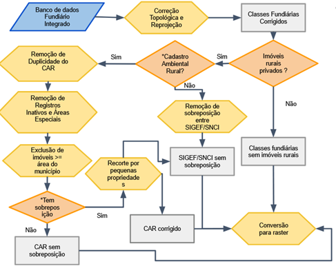

Pré-processamento dos dados
Sobre
Nesta etapa, os dados brutos integrados no PostgreSQL passam por correções geométricas e filtragens rigorosas para garantir a precisão dos cálculos e a integridade da malha.
Etapas Metodológicas
- Correção e Reprojeção: Eliminação de inconsistências geométricas e reprojeção de todas as camadas para uma projeção métrica (ESRI:102033 - Albers Equal Conic).
- Filtragem do CAR: Remoção de imóveis com status "Cancelado" ou "Suspenso", e exclusão de tipos de assentamentos e povos tradicionais que já existem em bases oficiais mais estáveis.
- Exclusão de Grilagem Digital: Imóveis do CAR com área igual ou superior à área total do município são removidos para prevenir distorções.
- Resolução de Duplicidades: Priorização do registro mais recente e eliminação de sobreposição com áreas do INCRA (SIGEF/SNCI) por meio do recorte das feições.
- Priorização Social: Recorte delimitado a pequenas propriedades sobre as grande propriedades. Essa etapa é feita na base de dados do CAR e SIGEF/SNCI.
Fluxograma

Figura 2 - Fluxograma de Pré-processamento
Exemplo de Grilagem Digital

Figura 3 - Exemplo de Grilagem Digital